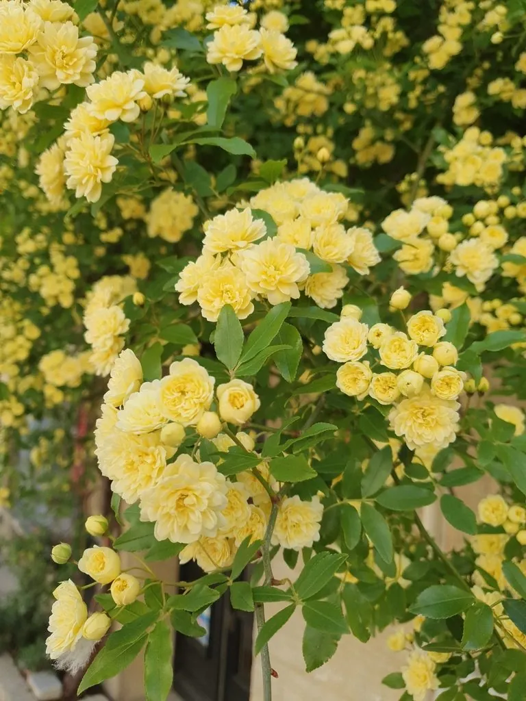

灌木与花木 · 植物界
木香 Rosa banksiae

蔷薇科常绿攀援灌木，春季开白色或黄色小花，花量繁密、香气清雅，是庭院棚架与花墙的优良材料。
- 分类
- 门被子植物门纲木兰纲目蔷薇目科蔷薇科属蔷薇属
- 栖息环境
- 山坡灌丛、溪边与庭院棚架，喜光也耐半阴
- 地理分布
- 中国西南、华中至华东；各地庭院栽培
- 保护级别
- 暂无评估；中国未列入国家重点保护野生植物名录
物种志
木香为蔷薇科蔷薇属常绿攀援灌木，高可达 6 米，枝条细长、光滑，具少数皮刺。叶互生，奇数羽状复叶，小叶 3–5 枚，椭圆状卵形，边缘具细锯齿。伞形花序顶生，花小，白色或黄色，花瓣 5 枚，香气清雅，花期 4–5 月；果实为蔷薇果，球形，果期 9–10 月。
木香原产中国西南至华中地区，生于山坡灌丛与溪边，各地庭院广泛栽培。它喜光，也耐半阴，喜温暖湿润，适宜疏松肥沃、排水良好的土壤。枝条细长、攀援力强，春季花量繁密，白花如雪、黄花如金，是庭院棚架、花墙与篱垣的优良材料；花可提取芳香油，根皮可入药。栽培以扦插和压条繁殖为主，需设支架供其攀爬，花后修剪可促进来年花枝发育。
形态与习性
- 株高攀援高可达 6 米
- 花期4–5 月，花白色或黄色
- 果期9–10 月，蔷薇果球形
- 光照喜光，也耐半阴
- 水分喜湿润，忌积水
- 土壤疏松肥沃、排水良好的壤土
- 主要用途棚架、花墙与篱垣绿化
趣味知识
- 木香花量极大，盛开时白花如雪，香气可飘很远。
- 它有两种常见类型：白木香花白色单瓣，黄木香花黄色重瓣。
- 木香枝条细长，攀援力强，适合做花墙和棚架。
- 花可提取芳香油，根皮可入药，有活血通络之效。